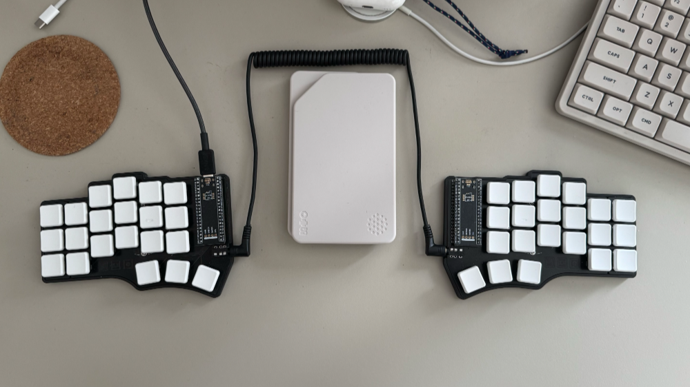

Ура, сплит!
Я прочитал одну статью, и теперь моя клавиатура выглядит так (то, что в центре к клавиатуре не относится):

Знакомьтесь – это Cantor 42. Про все, связанные с ней нюансы, можно прочитать в упомянутой выше статье, я же хочу рассказать больше о процессе сборки и впечатлениях от использования.
Вообще, я давно о чем-то таком подумывал, но меня всегда останавливала цена: стоимость такой клавиатуры в сборе обычно переваливает за сотню-другую долларов, а если еще добавить доставку и таможню, то вполне может выйти и все 300. С учетом того, что я не был уверен, что мне "зайдет", предприятие всегда казалось черезчур дорогим и потому сомнительным. Но на этот раз я решил, что готов попробовать собрать клавиатуру сам: это так же ничего не гарантировало, но точно было в несколько раз дешевле, а еще обещало в два раза больше фана (забегая вперед скажу, что "фанов" оказалось аж целых три) – ведь придется еще и паять самому!
К тому же, оказалось, что можно собрать клавиатуру почти "из топора", нужны были только: печатные платы, контроллеры, свитчи, кейкапы, сокеты и проводки для соединения половинок – согласитесь, не так много. Для такой клавы не нужен даже корпус – хватит подставок, которые крепятся прямо к платам (но если очень хочется, то можно распечатать на 3d принтере и его).
В общем, мне показалось, что не так уж и страшно, так что можно попробовать.
Плата
Через некоторое время после того, как я заказал печатные платы у JLCPCB (опять же, по предусмотренному автором клавиатуры гайду), мне внезапно пришел вопрос к которому я был совсем не готов. Чуваки из JLCPCB уточняли про размер посадочных отверстий для свитчей, которые они не могли сделать такими, как было указано в дизайне, поэтому они хотели их увеличить. Альтернативой была перезаливка дизайна (к этому моменту отказаться от печати уже было нельзя). Я бросился спрашивать совета у всех знакомых, которые имели, по моему мнению, опыт в печати, на реддите и даже завел багу в оригинальном репозе. В итоге, мне в нескольких местах посоветовали соглашаться на увеличение отверстий, что я и сделал. Возможно, это была ошибка в дизайне, потому что результат никак не сказался на монтаже свитчей (а если это была ошибка, то свитчи могли и не встать вовсе).
На всякий случай, если вдруг соберетесь менять толщину платы (дефолт 1.6mm), то учтите, что дизайны корпусов могут потребовать изменений. Например, я попросил знакомого отпечать мне полукорпуса на 3д принтере, и мои платы встали в них очень ровно, но платы толще потребовали бы увеличения высоты бортиков – я бы сразу на это внимание не обратил, и вероятно пришлось бы перепечатывать.
Свитчи
Остальные комплектующие я заказал на Али по списку из описания к форку. Поскольку JLCPCB изготавливают платы количеством, кратным 5, я решил, что буду собирать сразу две клавиатуры, так что заказывал остальные комплектующие исходя из этого, например, свитчей я заказал аж 90 штук (2 x 42 + 6 про запас).
Свитчи я выбрал Kailh Choc v1 brown – у меня была до этого клавиатура с коричневыми свитчами, и мне нравится то, как они ощущаются (я пробовал и красные, и синии, но вообще свитчей очень много – свою первую клавиатуру я покупал в сборе, и в комплекте шло несколько свитчей, которые можно было попробовать). Chok я выбрал, потому что хотел клавиатуру с низким профилем (профили тоже отдельная история, которую стоит поизучать). Я не стал заказывать сокеты для горячей замены, и напаял свитчи прямо на плату: у меня была клавиатура с возможностью замены свитчей, но я менял их всего один раз (как раз когда пробовал синии), и больше не трогал, так что решил, что даже если какой-то свитч сгорит, то я его перепаяю.
Пайка
Кстати, о пайке. Пайка это один из тех моментов, почему я все же решил попробовать собрать все сам. Последний раз я паял еще в школе (и даже ходил какое-то время в радио кружок), а несколько лет назад наткнулся на канал, в котором чувак придумывает и паяет разные штуки, из которого узнал как поменялся мир паяльников с того времени. А поменялся он разительно: современные паяльники (например, MiniWare TS80P, который выбрал я), уже не просто нагревательные элементы, а сложные девайсы, которые не просто нагреваются до указанной температуры, но и поддерживают эту самую температуру в зависимости от ситуации. И, при всем этом, размером эти паяльники сравнимы если не с шариковой, то уж с некоторыми перьевыми ручками точно. В общем – настоящий космос по вравнению с отцовским паяльником в моем детстве.
Про основы пайки у Алекса есть отдельный видос (и даже не один), но что мне кажется важным отметить – это то, что вам вряд ли понадобится отельный флюс, и для того, чтобы спаять эту клавиатуру, должно хватить флюса, который уже содержится в припое.
Кейкапы
Про кейкапы упомяну несколько вещей. Во-первых, если заказывать готовые, то стоит учитывать, что бывают варианты, которые называются "home" – они отличаются от небольшие тактильными выступами (bumps), и предназначены для размещения на клавишах f/j, если вы не покупаете комплект капов без обозначения клавиш, то имеет смысл проверить входят ли в него такие варианты, и можно ли их заказать отдельно.